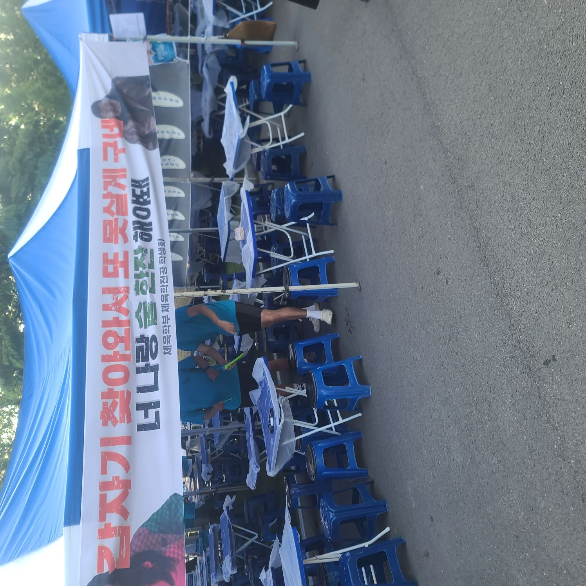
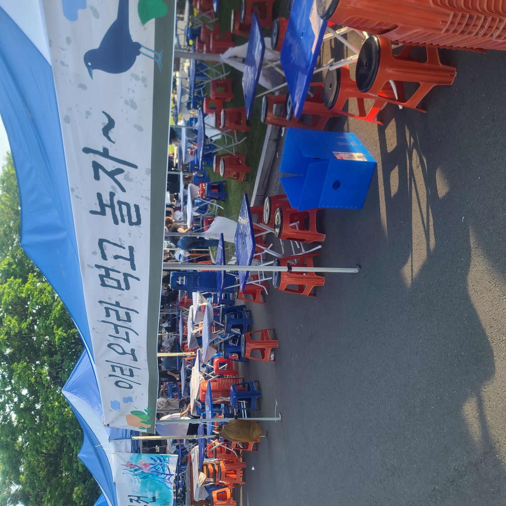
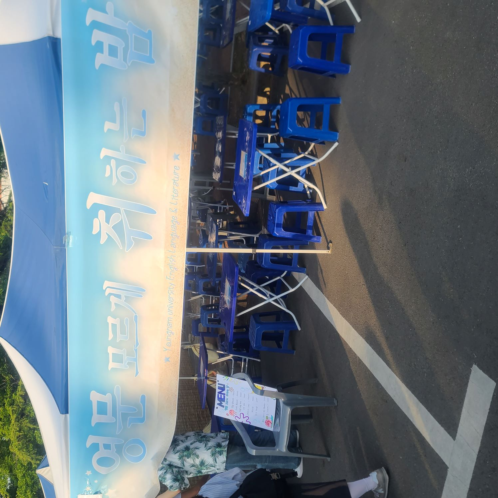
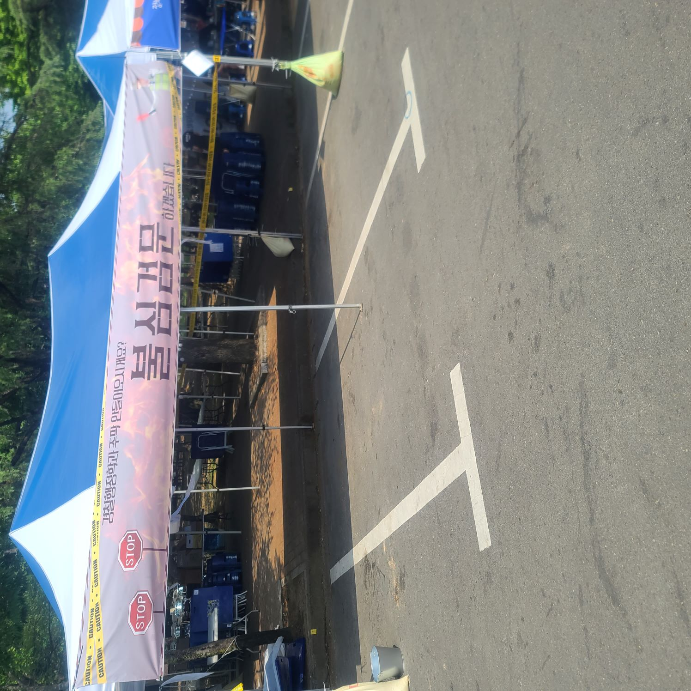
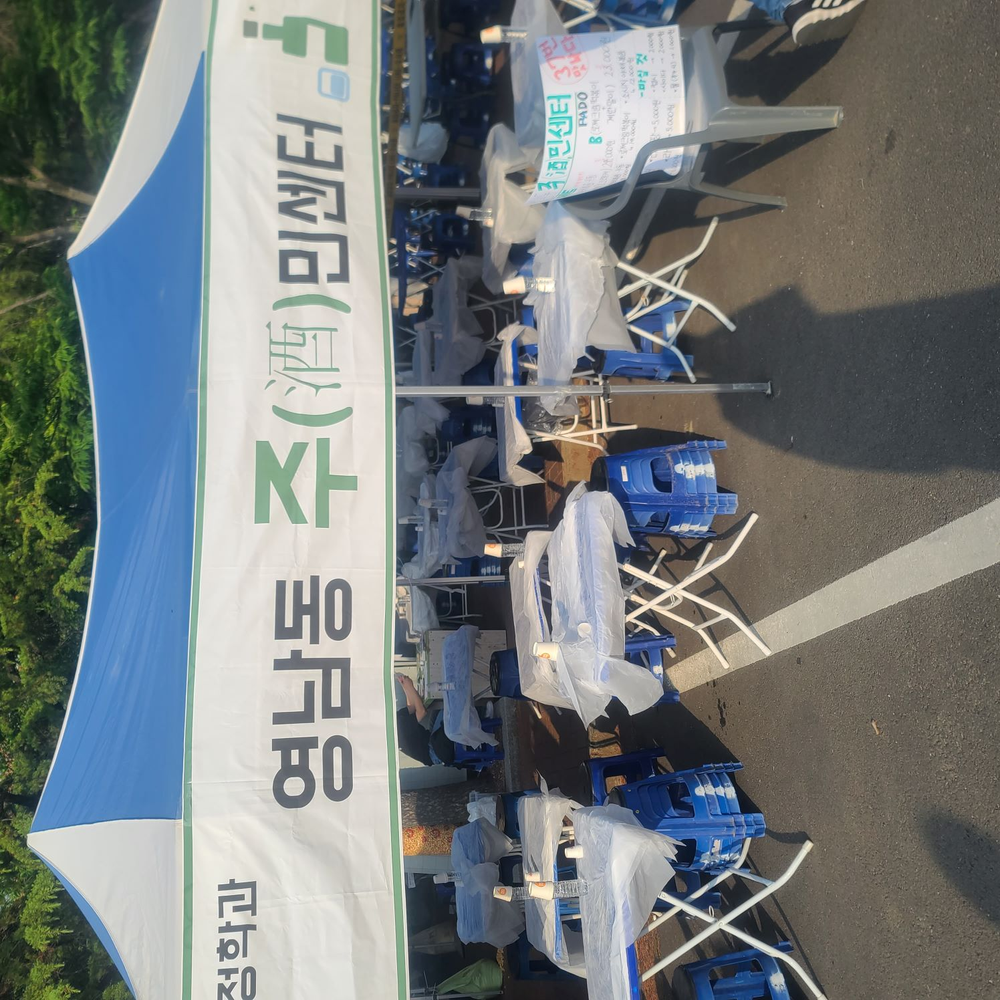
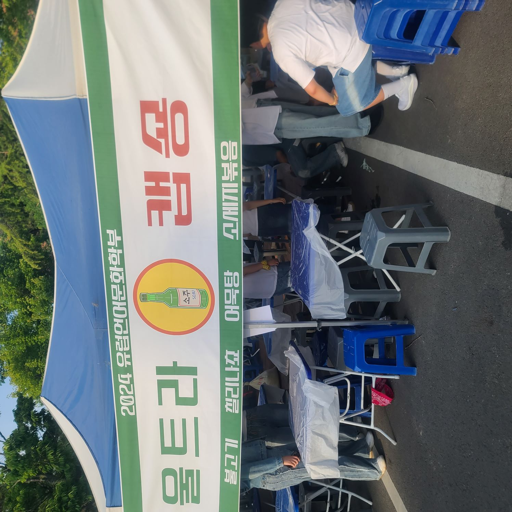
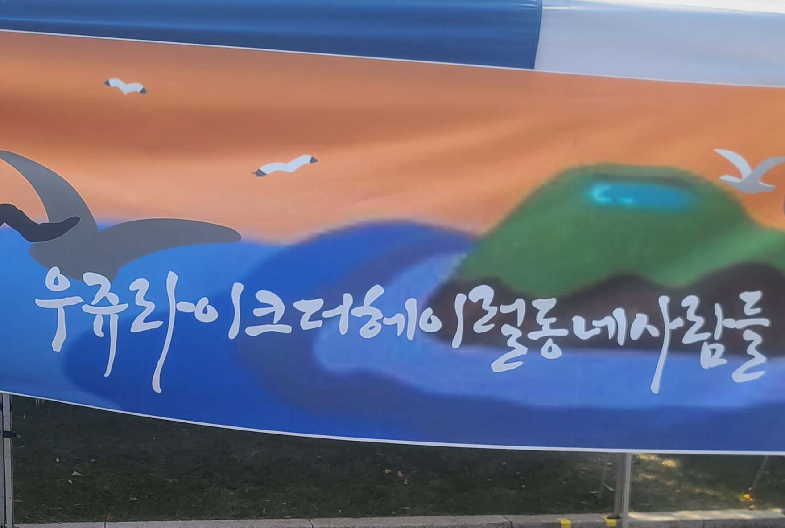
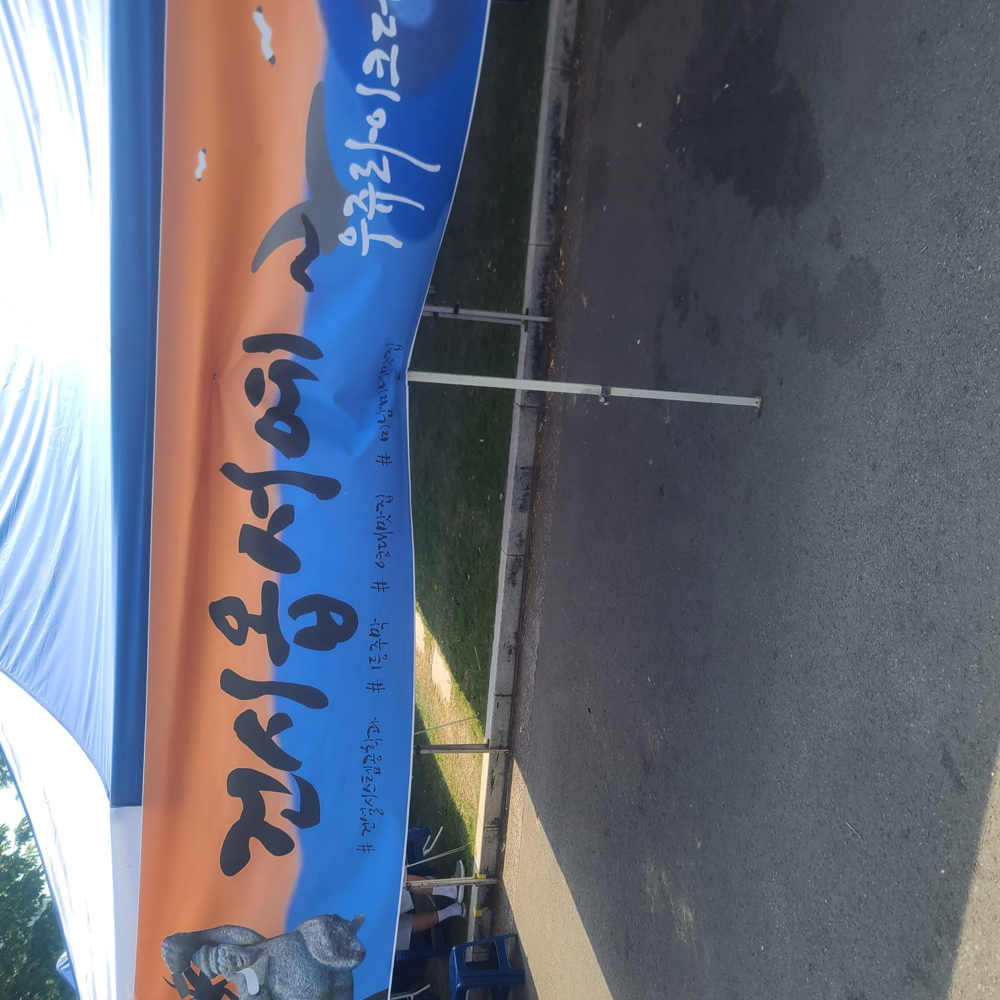
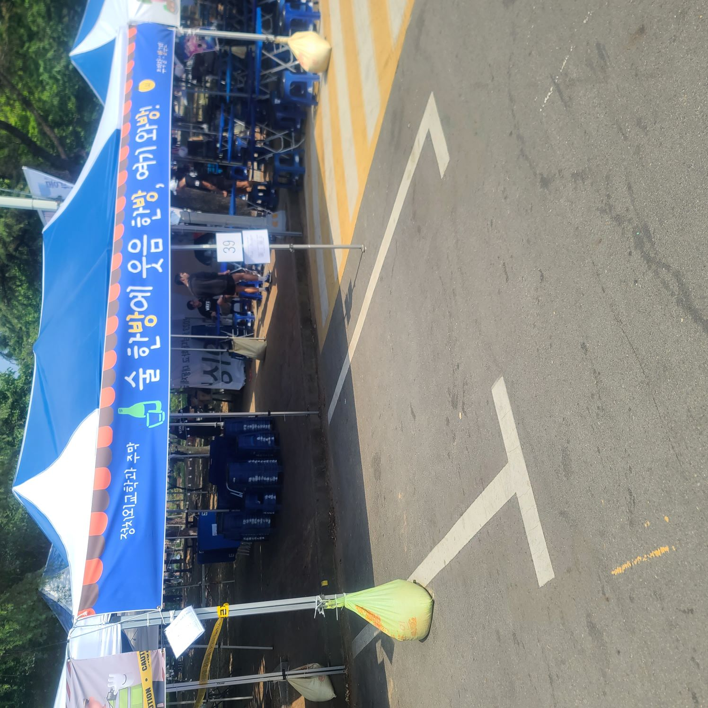
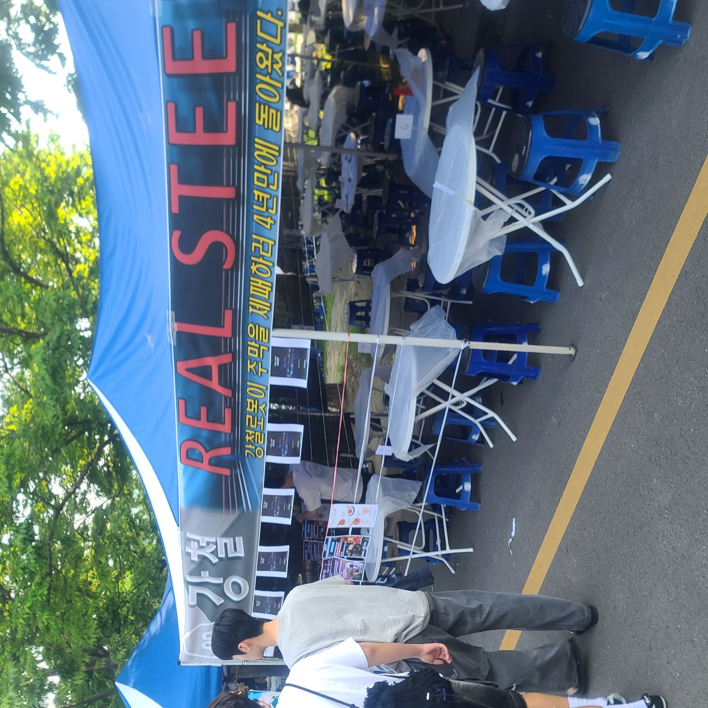

순우리말
또 못살게 구네
유명한 영화인 범죄도시에 나오는 대사를 살짝 비틀어서 지어낸 문자이다. 요즘엔 보기 힘든 순우리말만 적혀있어 한자어가 포함될 때와는 달리 단어보단 문장 형식의 제목이 되는 것을 알 수 있다.
이리 오너라
이 주막의 제목은 조선배경의 판소리 춘향가 중 하나인 사랑가의 가사를 참고하여 만들어졌다. 순우리말만 쓰여줘 이해하기는 쉬우나 역시 문장형식으로 쓰게 되는 만큼 길어지는 단점이 보인다.
한자어와 순우리말
취하는 밤
주변에서 흔하게 볼 수 있는 건 의외로 순우리말보다는 한자어가 혼합된 글자이다. 이 글자 또한 한자어인 영문과 순우리말인 밤이 혼합된 것이다. 한자어를 포함하는 것으로 자칫하면 너무 길어질 수 있는 문장을 간략화시킨다는 장점이 있다. 단점은 한자어이다 보니 무슨 뜻인지 모를 수도 있다는 단점이 있다.
한자어
불심검문
완전히 불심검문이라는 한자어로만 구성된 제목이다. 한자어로만 구성된 만큼 단어 자체의 길이는 한눈에 알만큼 줄어들었으나 맥락으로 파악할 수 있었던 순우리말과 혼합되었을 때와는 달리 비교적 뜻을 파악하기 어려워진다는 단점이 커졌다.
한자어와 외래어, 순우리말, 영어
"주"민센터
주민 센터란 문자는 한자인 "주"란 단어와 영어인 center를 우리말로 작성한 센터의 혼합글자이다. 영어를 한글로 작성한 만큼 문자가 차지하는 공간이 줄어들어 읽는 데 불편함을 줄였다.
울트라 캡숑
영어인 ultra를 울트라로 capchon을 캡숑이란 외래어로 표현한 문자이다. 원본으로 해석하여도 비속어가 많이 포함되어 있어 간략화는 잘되어 있으나 한 눈으로 문자의 뜻과 의미를 파악하기 어렵다.
우쥬 라이크
순우리말인 동네, 사람과 영어를 한국어로 작성한 우쥬라이크란란 문자가 쓰여 있다. 너무 잡다하게 혼합된 문자라 한눈에 이해하기 어렵고 동네 사람들이란 글자를 제외하면 무슨 의미인지 파악하기 어렵다는 단점이 돋보인다.
건시 옵서예
건설 시스템이라는 외래어와 한자어를 줄인 건시와 순우리말인 옵서예을 혼합한 글자이다. 순우리말의 사투리란 언어적인 특성을 살려 구수한 느낌을 주지만 앞서 단어를 줄인 것이 오히려 뜻을 전달하는 데 방해되는 느낌을 준다.
한 방
이 문장의 구성은 웃음이란 순우리말과 한방, 와방 같은 one shot이란 영어로부터 파생된 외래어가 혼합된 문자이다. 유사한 끝맺음을 반복하는 것으로 리듬감을 살려주는 효과를 주었다.
한자어와 영어
steel
한자어인 강철과 영어인 real steel을 혼합한 단어이다. 비슷한 뜻을 지니고 있는 두 문자를 서로 다른 언어를 사용하는 것으로 같은 뜻으로 새로운 느낌을 줄 수 있다는 장점이 있다. 단점으로는 그냥 같은 단어를 두 번 쓴 거 아니냐는 느낌을 줄 수 있다.